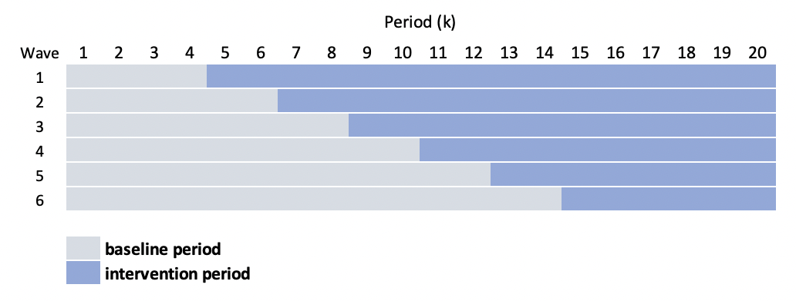

\[ Y_{ijt} = a_{j} + b_{jk} + A_{jk} (\delta + d_j) \] \[ a_j \sim N(0, \sigma^2_a) \\ b_{jt} \sim N(0, \Sigma_b) \\ d_j \sim N(0, \sigma^2_d) \]
library(simstudy)
library(ggplot2)
library(data.table)
library(mgcv)
library(lme4)
library(splines)
library(gamm4)def <- defData(varname = "a", formula = 0, variance = 9)
def <- defData(def, varname = "d", formula = 0, variance = 2)
def <- defData(def, varname = "mu", formula = 0, dist = "nonrandom")
def <- defData(def, varname = "s2", formula = 16, dist = "nonrandom")
defOut <- defDataAdd(varname = "y",
formula = "a + b + A * (5 + d)",
variance = 40)set.seed(1234)
dd <- genData(48, def, id = "site")
dd <- addPeriods(dd, 20, "site", perName = "k")
dd <- addCorGen(dtOld = dd, idvar = "site", nvars = 20,
rho = .6, corstr = "ar1",
dist = "normal", param1 = "mu", param2 = "s2", cnames = "b")
dd <- trtStepWedge(dd, "site", nWaves = 6, lenWaves = 2, startPer = 4,
grpName = "A", perName = "k")
dd <- genCluster(dd, "timeID", numIndsVar = 30, level1ID = "id")
dd <- addColumns(defOut, dd)
dd$site <- as.factor(dd$site)
dd[, normper := (k - min(k))/(max(k) - min(k))]